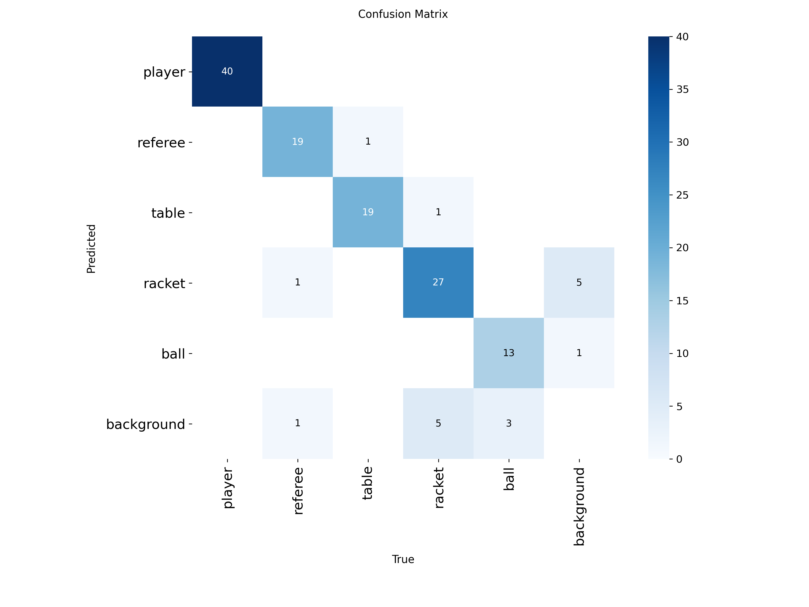

YOLO11s Fine-tuning 與桌球賽事分析
本專案旨在透過標記 100 張桌球賽事圖片作為訓練集，對 YOLO11s 預訓練模型進行 Fine-tuning。重點在於提升模型對特定場景物件（如球桌、球員、球拍及高速移動的球）的辨識能力，並透過參數調校解決小物件偵測困難的問題。
使用 labelImg 對 100 張原始影像進行手動標記，定義類別包括球員、裁判、球桌、球拍以及球。標記品質直接影響模型收斂效果。
本專案的關鍵挑戰在於小物件 (Small Objects) 的偵測，如乒乓球與球拍。由於球速極快導致畫面模糊，且像素佔比極低。
imgsz 提升至 1280，增加模型對微小細節的感知。mosaic=0.8，增加單一畫面中的物件密度，緩解小樣本問題。flipud=0.0)，因為場景中不會出現倒掛的球桌。hyp_config = {
"epochs": 500,
"imgsz": 1280, # 提升解析度捕捉細節
"mosaic": 0.8, # 拼貼影像，增強小物件訓練
"mixup": 0.1, # 影像融合
"flipud": 0.0 # 關閉垂直翻轉以符合現實場景
}混淆矩陣顯示模型對於大物件（球桌、裁判、球員）的準確率極高。然而，受限於樣本數與影像模糊程度，小物件（球拍、球）仍有進步空間。
模型在 500 個 Epoch 內穩定收斂，Loss 曲線顯示並無過擬合現象。
模型成功辨識出複雜背景下的球桌、球員與裁判位置。
點擊下方按鈕查看完整訓練腳本與 YAML 配置檔案。
View on GitHub